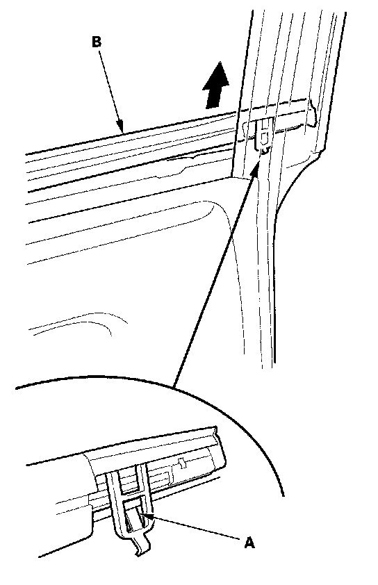
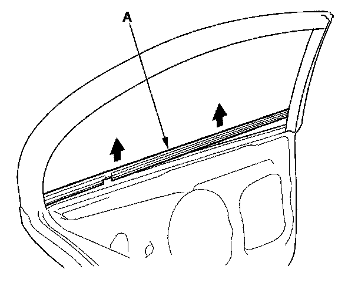
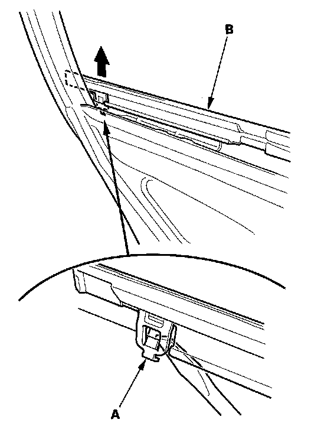

Rear Door Window Glass Weatherstrip: Service and Repair
Rear Door Glass Outer Weatherstrip Replacement4-door
NOTE:
- Put on gloves to protect your hands.
- Take care not to scratch the door.
1. Remove these items:
- Door panel
- Plastic cover
- Rear door glass
- Quarter glass

2. Release the front hook (A) from inside of the door, then pull up the front portion of the rear door glass outer weatherstrip (B).

3. Starting at the front, slowly pull up the rear door glass outer weatherstrip (A).

4. Push the rear hook (A) out from inside of the door, then remove the rear door glass outer weatherstrip (B).
5. Push the clip portions of the rear door glass outer weatherstrip into place securely.